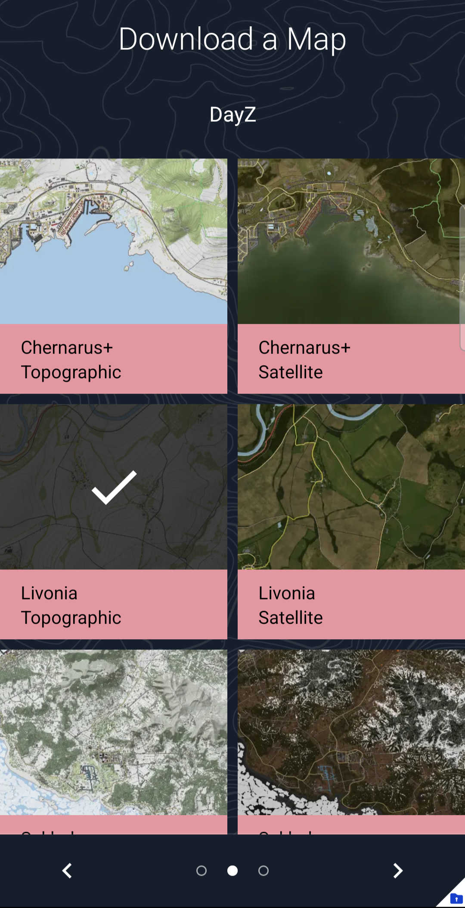
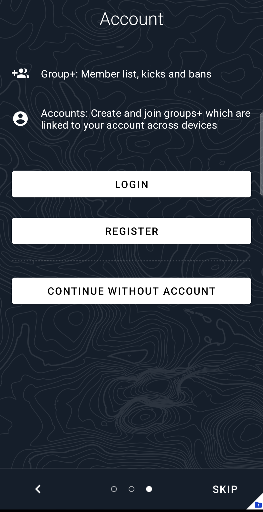
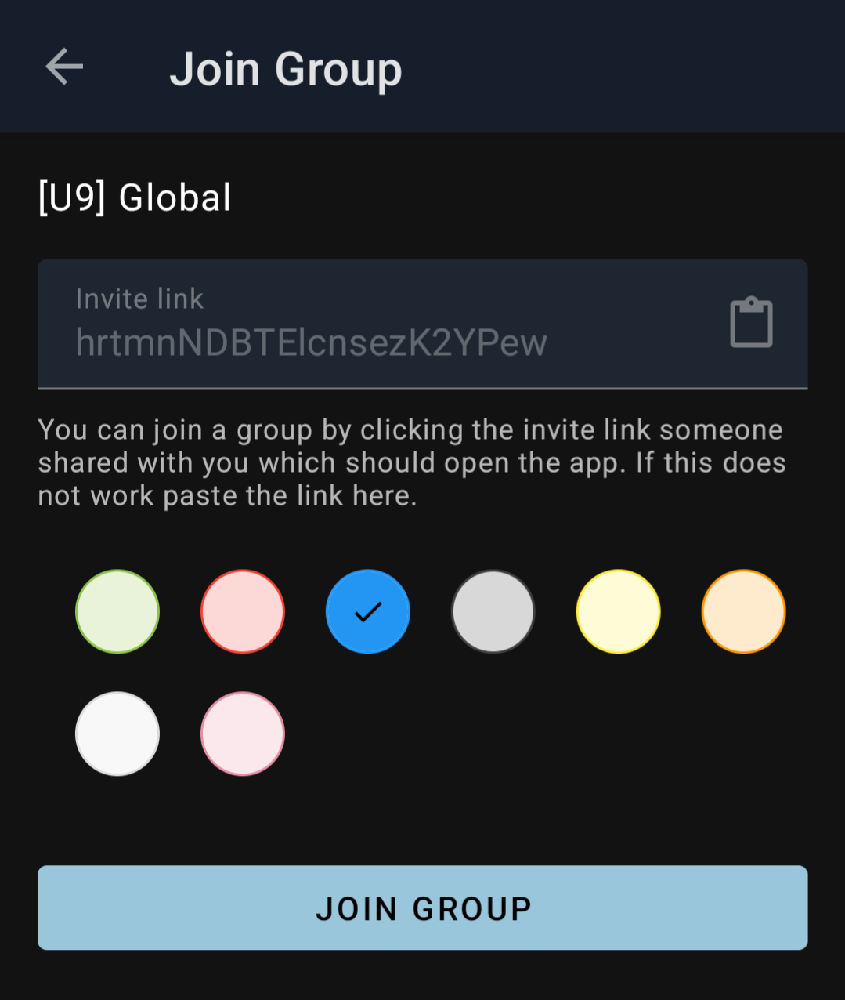
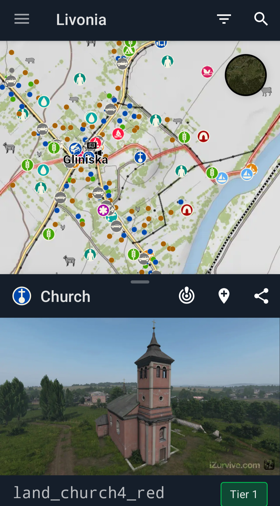
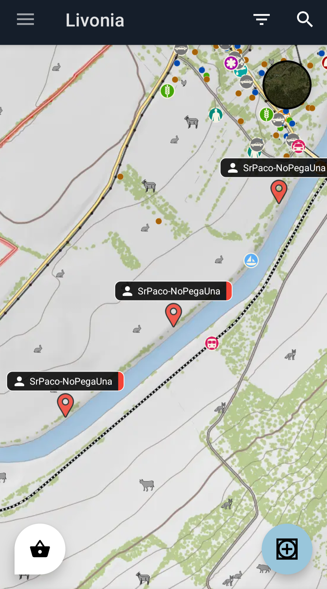
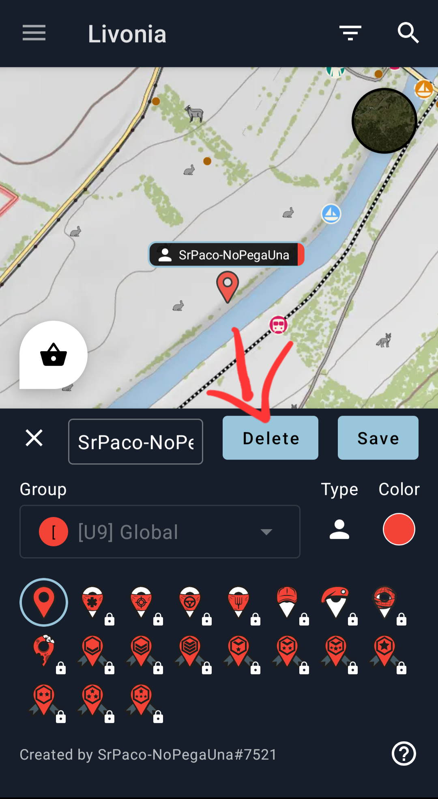

1
Guía: descargar y usar el mapa de DayZ (iZurvive)
En esta página verás una guía ordenada, sigue los pasos en tu móvil para tener el mapa del clan sincronizado.
2
Paso 2 — Descargar el mapa
Dentro de iZurvive busca el mapa correspondiente (por ejemplo: Livonia, Chernarus) y descárgalo para uso.
3
Paso 3 — Crear una cuenta
Crea una cuenta si aún no la tienes. Puedes registrarte con correo o usar el método que prefieras.

4
Paso 4 — Ingresar a la frecuencia del clan
Para poder ver a los demás jugadores en el mapa debes añadir la frecuencia / enlace del clan dentro de iZurvive.
5
Paso 5 — Uso de la app
La app es simple: acerca/aleja, activa capas, y revisa los pins de jugadores. Ajusta las opciones para mostrar solo lo que necesites.
Puedes mantener presionado los iconos para abrir una pre-visual de la estructura del lugar o puntos de refrencia.
!
Nota
Evita crear más de un pin con tu nombre: muévelo con sincronía o elimina el anterior antes de crear uno nuevo.


Puedes mantener pulsado tu pin y moverlo dentro del mapa para ajustar tu posición real.
Cualquier duda puedes preguntarla por el grupo y alguien te ayudara siempre.